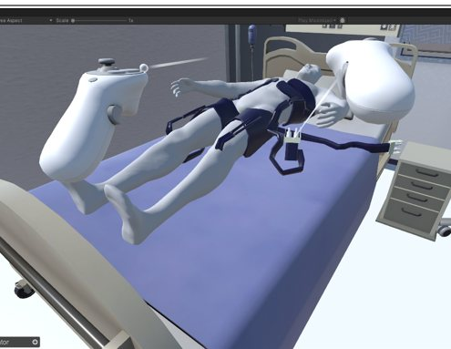

::VR_HYPOTHERMIA_SIM
VR 低溫治療訓練模擬
開發中・大專生計畫投稿作品以 Unity 打造的 VR 醫療訓練模擬，讓受訓者在虛擬情境中演練低溫治療（therapeutic hypothermia）的完整流程。系統結合分支對話劇情、XR 實體按鈕互動與物理碰撞觸發，並規劃導入以隱馬可夫模型（HMM）為基礎的學習分析模組，追蹤操作熟悉度與流程瓶頸，作為診斷回饋。
- 自訂 .txt 對話腳本格式，支援 ::LABEL、[IF:...]、JumpTo:: 等標籤語法的分支解析
- 三日事件情境架構，涵蓋設備故障、患者顫抖、血壓不穩等隨機支線
- 規劃中的學習分析模組：Familiarity Index 計時與操作瓶頸熱區分析